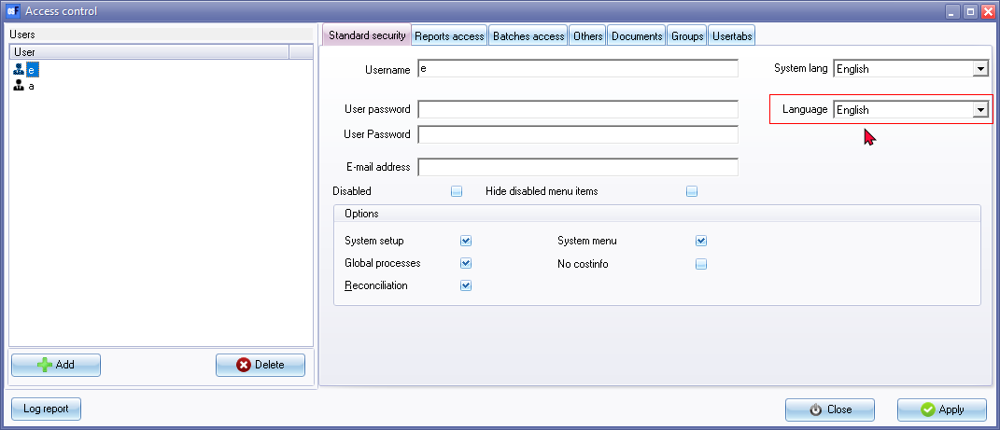
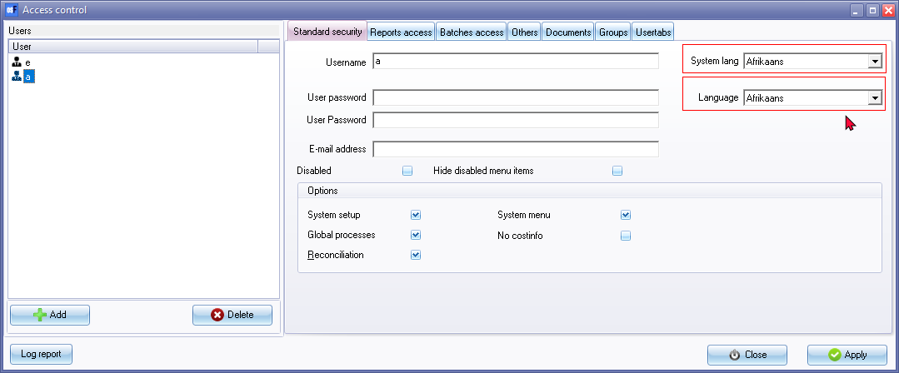

Add Multi-language users
By adding users and selecting different system language, and User language for each user, you may login to different languages.
|
|
The MULTI-LANG-DEMO Books is included in the ...\Bin\Tutorials\ folder. To use this login with e (Username and Password) for English and a (Username and Password) for Afrikaans. |

To add Multi-language users:
- Go to Setup → Access control menu.
- Click on the Add button and rename the User.
- Enter a Password for the User.
- Click on the Others tab.

- Select the System Language.
|
|
System Language will list all the available languages in the Start → Switch Language menu. Any language may be customised / edited for your specific requirements on the Setup → Tools → Customise Language menu. The available languages is stored in the ... \ bin \ languages folder of your osFinancials5 installation directory. The default language is selected "System lang" field. This is the language in which osFinacials5 will open the Set of Books. |
- Select the User Language.
|
|
Language will list all languages created / added in Setup → Groups - Languages tab. |
- Click on the Apply button.
- Click on the Add button to add the next User and rename the User.
- Enter a Password for the User.
- Click on the Others tab.

- Select the System Language for the user interface. The language set in the "System lang" field, will be displayed as the osFinancials in interface. In this example, the osFinancials user interface will be displayed in Afrikaans if User "a" opens the Set of Books.
- Select the User Language.
- Click on the Apply button.
- Click on the Close button.
|
|
Access control - log report - It will list when the users logged in and out, on which device, etc. Important functions executed from the Tools → Global processes menu (Setup ribbon), will also be listed to display the date and type as well as which user and on which computer these important actions were performed. The Type of actions is as follows:
|